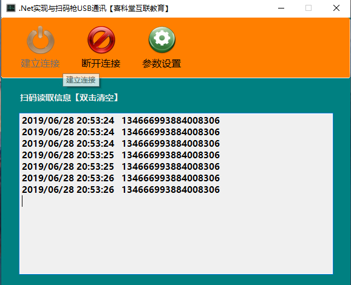

原文出处:本文由博客园博主.NET开发者提供。
原文连接:https://www.cnblogs.com/xiketangedu/p/11104770.html
原文连接:https://www.cnblogs.com/xiketangedu/p/11104770.html
随着工业互联的发展，扫码枪在很多场合都有所应用，超市、商场以及一些智能工厂。今天主要讲如何通过C#实现与新大陆扫码枪（OY10）进行通信，对于扫码枪的配置，这里就不多说了，结合说明书就可以实现。这里值得注意的是，如果安装驱动后，电脑设备管理器中看不到COM口，可能需要扫一个条形码来设置一下，具体参考说明书通讯配置章节。
首先贴下界面，基于Winform开发，主要就是正常的串口通信，涉及的技术包括UI界面设计+串口通信知识+参数配置处理+委托更新界面，涵盖了一个小系统必备的一些知识。

再来贴一些源码，首先贴个核心串口类的编写：


1 using System;
2 using System.Collections.Generic;
3 using System.IO.Ports;
4 using System.Linq;
5 using System.Text;
6 using System.Threading.Tasks;
7
8 namespace NewLand
9 {
10 public delegate void ShowMsgDelegate(string info);
11
12 public class NewLandSerial
13 {
14
15 //定义串口类对象
16 private SerialPort MyCom;
17 //定义接收字节数组
18 byte[] bData = new byte[1024];
19 byte mReceiveByte;
20 int mReceiveByteCount = 0;
21 public ShowMsgDelegate myShowInfo;
22
23 public NewLandSerial()
24 {
25 MyCom = new SerialPort();
26
27 }
28
29 #region 打开关闭串口方法
30 /// <summary>
31 /// 打开串口方法【9600 N 8 1】
32 /// </summary>
33 /// <param name="iBaudRate">波特率</param>
34 /// <param name="iPortNo">端口号</param>
35 /// <param name="iDataBits">数据位</param>
36 /// <param name="iParity">校验位</param>
37 /// <param name="iStopBits">停止位</param>
38 /// <returns></returns>
39 public bool OpenMyComm(int iBaudRate, string iPortNo, int iDataBits, Parity iParity, StopBits iStopBits)
40 {
41 try
42 {
43 //关闭已打开串口
44 if (MyCom.IsOpen)
45 {
46 MyCom.Close();
47 }
48 //设置串口属性
49 MyCom.BaudRate = iBaudRate;
50 MyCom.PortName = iPortNo;
51 MyCom.DataBits = iDataBits;
52 MyCom.Parity = iParity;
53 MyCom.StopBits = iStopBits;
54 MyCom.ReceivedBytesThreshold = 1;
55 MyCom.DataReceived += MyCom_DataReceived;
56
57 MyCom.Open();
58 return true;
59 }
60 catch
61 {
62 return false;
63 }
64 }
65
66 private void MyCom_DataReceived(object sender, SerialDataReceivedEventArgs e)
67 {
68 mReceiveByteCount = 0;
69 while (MyCom.BytesToRead > 0)
70 {
71 mReceiveByte = (byte)MyCom.ReadByte();
72 bData[mReceiveByteCount] = mReceiveByte;
73 mReceiveByteCount += 1;
74 if (mReceiveByteCount >= 1024)
75 {
76 mReceiveByteCount = 0;
77 //清除输入缓存区
78 MyCom.DiscardInBuffer();
79 return;
80 }
81 }
82 if (mReceiveByteCount > 0)
83 {
84 myShowInfo(Encoding.ASCII.GetString(GetByteArray(bData, 0, mReceiveByteCount)));
85 }
86
87 }
88
89 /// <summary>
90 /// 自定义截取字节数组
91 /// </summary>
92 /// <param name="byteArr"></param>
93 /// <param name="start"></param>
94 /// <param name="length"></param>
95 /// <returns></returns>
96 private byte[] GetByteArray(byte[] byteArr, int start, int length)
97 {
98 byte[] Res = new byte[length];
99 if (byteArr != null && byteArr.Length >= length)
100 {
101 for (int i = 0; i < length; i++)
102 {
103 Res[i] = byteArr[i + start];
104 }
105
106 }
107 return Res;
108 }
109
110
111 /// <summary>
112 /// 关闭串口方法
113 /// </summary>
114 /// <returns></returns>
115 public bool ClosePort()
116 {
117 if (MyCom.IsOpen)
118 {
119 MyCom.Close();
120 return true;
121 }
122 else
123 {
124 return false;
125 }
126
127 }
128 #endregion
129
130 }
131 }
再者就是界面的调用，直接看代码：
1 using System;
2 using System.Collections.Generic;
3 using System.ComponentModel;
4 using System.Configuration;
5 using System.Data;
6 using System.Drawing;
7 using System.IO.Ports;
8 using System.Linq;
9 using System.Text;
10 using System.Threading.Tasks;
11 using System.Windows.Forms;
12
13 namespace NewLand
14 {
15 public partial class FrmMain : Form
16 {
17 public FrmMain()
18 {
19 InitializeComponent();
20 this.Load += FrmMain_Load;
21
22 }
23
24 private void FrmMain_Load(object sender, EventArgs e)
25 {
26 this.btn_DisConn.Enabled = false;
27 }
28
29 private void txt_Info_DoubleClick(object sender, EventArgs e)
30 {
31 this.txt_Info.Clear();
32 }
33
34 NewLandSerial myNewLand;
35
36
37 private void btn_Connect_Click(object sender, EventArgs e)
38 {
39 string Port= ConfigurationManager.AppSettings["Port"].ToString();
40
41 myNewLand = new NewLandSerial();
42 myNewLand.myShowInfo += ShowInfo;
43
44 if (myNewLand.OpenMyComm(9600, Port, 8, Parity.None, StopBits.One))
45 {
46 MessageBox.Show("连接成功！", "建立连接");
47 this.btn_Connect.Enabled = false;
48 this.btn_DisConn.Enabled = true;
49 }
50 else
51 {
52 MessageBox.Show("连接失败！", "建立连接");
53 }
54 }
55
56 private void ShowInfo(string info)
57 {
58 Invoke(new Action(() =>
59 {
60 this.txt_Info.AppendText(DateTime.Now.ToString("yyyy/MM/dd HH:mm:ss") + " " + info + Environment.NewLine);
61 }));
62 }
63
64 private void btn_DisConn_Click(object sender, EventArgs e)
65 {
66 if (myNewLand.ClosePort())
67 {
68 MessageBox.Show("断开连接成功！", "断开连接");
69 this.btn_Connect.Enabled = true;
70 this.btn_DisConn.Enabled = false;
71 }
72 else
73 {
74 MessageBox.Show("断开连接失败！", "断开连接");
75 }
76 }
77
78 private void btn_ParaSet_Click(object sender, EventArgs e)
79 {
80 new FrmParaSet().ShowDialog();
81 }
82 }
83 }
最后是参数配置，通过App.Config实现：
1 using System;
2 using System.Collections.Generic;
3 using System.ComponentModel;
4 using System.Configuration;
5 using System.Data;
6 using System.Drawing;
7 using System.Linq;
8 using System.Text;
9 using System.Threading.Tasks;
10 using System.Windows.Forms;
11
12 namespace NewLand
13 {
14 public partial class FrmParaSet : Form
15 {
16 public FrmParaSet()
17 {
18 InitializeComponent();
19 this.Load += FrmParaSet_Load;
20 }
21
22 private void FrmParaSet_Load(object sender, EventArgs e)
23 {
24 for (int i = 0; i < 20; i++)
25 {
26 this.cmb_Port.Items.Add("COM" + i.ToString());
27 }
28
29 this.cmb_Port.Text = ConfigurationManager.AppSettings["Port"].ToString();
30 }
31
32 private void btn_Set_Click(object sender, EventArgs e)
33 {
34 Configuration cfa = ConfigurationManager.OpenExeConfiguration(ConfigurationUserLevel.None); //首先打开配置文件
35 cfa.AppSettings.Settings["Port"].Value = this.cmb_Port.Text;
36 cfa.Save(); //保存配置文件
37 ConfigurationManager.RefreshSection("appSettings"); //刷新配置文件
38 this.Close();
39 }
40 }
41 }